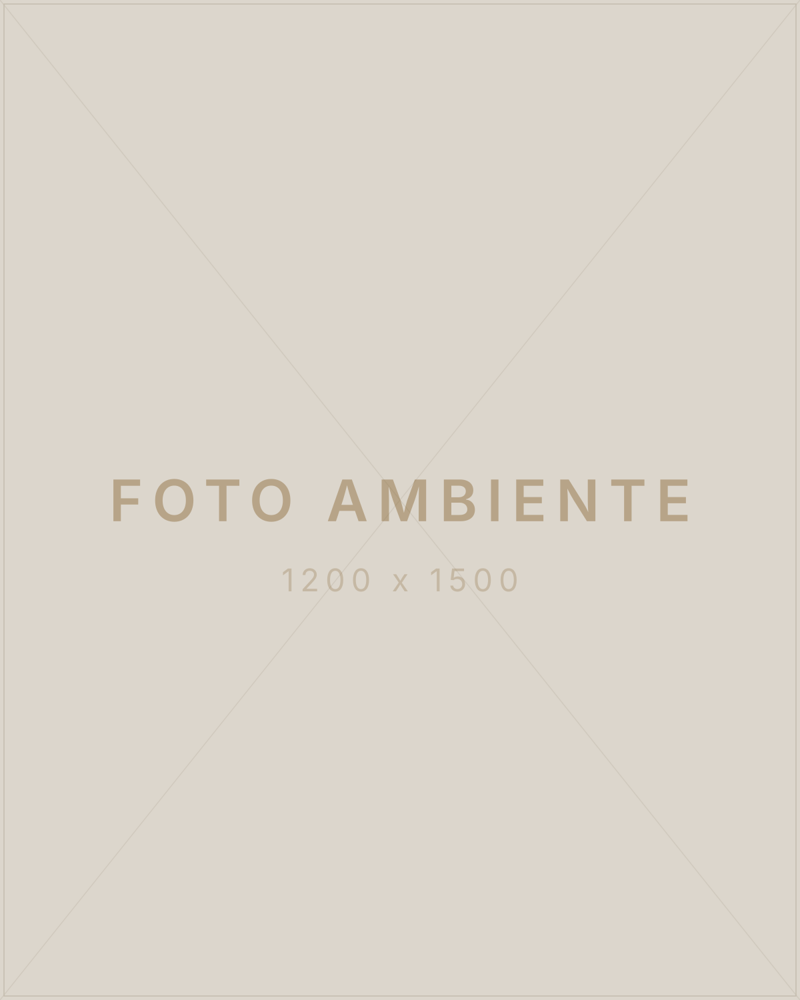
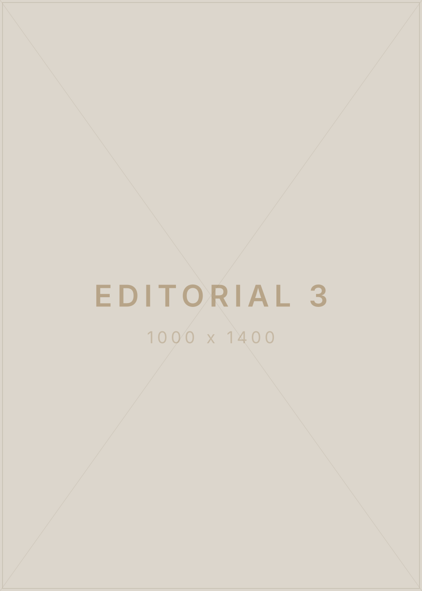
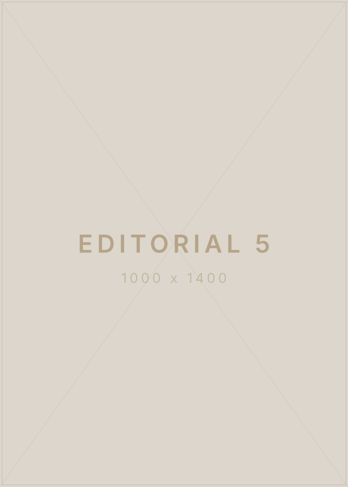
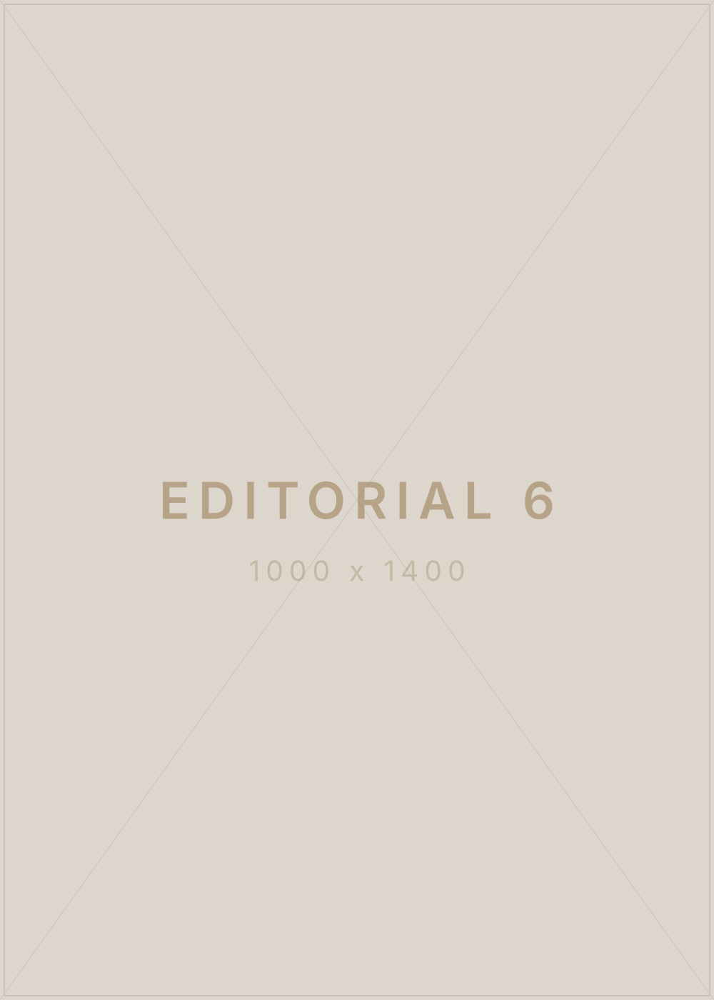

Redução de medidas · abdômen
Protocolo corporal
Estética
avançada
[CIDADE — UF]
Protocolos faciais e corporais desenhados pra sua pele, seu corpo e o seu tempo

Estética avançada[CIDADE — UF]
A clínica
A [NOME DA CLÍNICA] nasceu de uma ideia simples: cuidar de alguém vai muito além do procedimento. Cada atendimento começa com uma avaliação real — entender a sua rotina, o seu histórico e o que você espera de verdade — antes de qualquer protocolo ser desenhado.
É por isso que a maior parte das mulheres que chega aqui por indicação continua com a gente muito depois do primeiro resultado. Não vendemos sessão avulsa: construímos processo.
Tempo de clínica, número de atendimentos e taxa de retorno entram aqui:
[A CONFIRMAR]
Foto do espaço e da equipe: [A CONFIRMAR]
O que fazemos
Cada protocolo é montado depois da avaliação — o que está abaixo é o ponto de partida, nunca a receita pronta. Toque em um card pra entender como funciona.
Nomes comerciais dos protocolos, indicações e valores: [A CONFIRMAR]
Antes e depois
Arraste a linha pra comparar. [Uma linha dizendo de onde vêm as fotos — casos atendidos na própria clínica, com autorização de cada paciente.]
Protocolo corporal
Protocolo facial
Protocolo facial
Protocolo corporal
Protocolo facial
Protocolo corporal
Protocolo facial
Protocolo corporal
Resultados variam de pessoa pra pessoa. As imagens mostram casos individuais e não
representam garantia de resultado.
Autorização de uso de imagem de cada paciente: [A CONFIRMAR]
Programa assinatura
Criado pra quem tem rotina cheia, noite mal dormida e pouco tempo pra si mesma. Um acompanhamento que cabe na vida real — e não o contrário.
Histórico, rotina, medidas e objetivo. Uma conversa longa antes de qualquer aparelho ligar.
Combinação de procedimentos e frequência definidas pro seu caso, com prazo claro.
Cada etapa é registrada. Você vê a evolução em número e em foto, não só no espelho.
O que fazer depois pra o resultado durar — em casa, na rotina, sem virar um segundo emprego.
![[NOME DA PACIENTE] — [PUBLICAÇÃO], edição [N]](img/placeholder/editorial-1.svg)
[PUBLICAÇÃO] · Edição [N]
“[DEPOIMENTO EM UMA FRASE — o trecho mais forte, com o miolo em destaque aqui no meio.]”
“[Segunda frase do depoimento, mais curta.]” [Uma linha sua conectando a fala ao jeito da clínica trabalhar — por que esse depoimento resume o atendimento.]
Ler a edição completaConteúdo
A cada edição, a história de uma paciente contada por inteiro. Clique pra ampliar.
![Página: antes do método [NOME DO PROGRAMA]](img/placeholder/editorial-2.svg)




Dúvidas
Não achou o que procurava? Chama no WhatsApp — a gente responde pessoalmente, sem robô no meio.
Falar com a clínicaÉ uma avaliação, não uma venda. A gente conversa sobre o seu histórico, examina a área que te incomoda, tira medidas e fotos de acompanhamento. Só depois disso montamos a proposta de protocolo — com número de sessões, intervalo e valor fechado.
Depende do protocolo e do ponto de partida. Alguns tratamentos faciais mostram diferença já na primeira semana; protocolos corporais costumam pedir um ciclo completo pra resultado consolidado. Na avaliação você recebe uma estimativa honesta — inclusive se o caso não for pra gente.
A maior parte dos procedimentos é confortável e você volta pra rotina no mesmo dia. Quando houver algum desconforto ou período de recuperação, isso é dito antes do agendamento — nunca na hora.
Sim. Boa parte dos protocolos corporais e faciais atende homens e mulheres — alguns dos resultados publicados aqui são de pacientes masculinos.
Formas de pagamento aceitas, parcelamento e condições de pacote: [A CONFIRMAR]
Estamos na [ENDEREÇO] — [CIDADE/UF]. Ponto de referência e estacionamento: [A CONFIRMAR]
Contato
Conta pra gente o que te incomoda. A avaliação é o primeiro passo e não compromete nada.